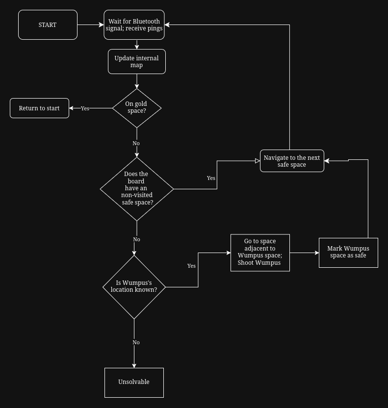

The Algorithm

This flowchart conveys the general structure of the algorithm.
The heart of the algorithm lies within the "Update internal map" and "Navigate to the next safe space" steps.
If the robot lands on a space with a breeze or a stench, then all surrounding tiles could potentially be dangerous and are marked as such.
However, if the robot lands on a square with no danger signal, then all of the surrounding tiles are safe, even if they were previously marked as dangerous before.
Thus, through process of elimination, it can be determined which tiles are actually dangerous. A similar process is used to determine which tile has the Wumpus.
Turn 1
Starting from the bottom left, the robot goes up, receives a danger signal, and marks the surrounding tiles as dangerous.

Turn 2
The robot turns around and goes to the right tile. There is no signal, so all surrounding tiles are safe (marked with yellow). Only one red adjacent tile remains, so this tile must be dangerous. The robot can now proceed to either yellow tile.

By going to every safe space on the board, the robot will eventually land on the gold space.